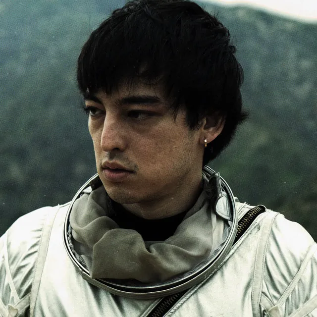

What has joji done?
George Miller has been getting a lot of buzz for his contemplative, trap-infused R&B, recorded under the name Joji. The production on his new EP, In Tongues, creates a dark atmosphere with its artfully disjointed placement of odd samples. “Will He,” the understated title track, has racked up over 12 million plays since it was released in October. Acclaim has been adding up from music sites like Pitchfork and Pigeons and Planes. But there’s another reason why the Japanese-Australian sad boy recently caught the media’s attention. Miller is also the memelord behind such internet fanfare as Pink Guy, Filthy Frank and even the viral Harlem Shake phenomenon. And his new music is a stark departure from the crude humor that originally attracted his nearly 5.5 million subscribers. (The most viewed video on his channel, TVFilthyFrank, features him dressed as Pink Guy, cooking egg juices that he spits from his mouth.) Miller’s story arc isn’t as simple as plotting out a straight trajectory from a gross-out comic to a serious musician, though. “I was always doing music on the side,” the trap-n-B artist tells Billboard. He uploaded his first public Joji song, “Thom,” to his SoundCloud page around two years ago. “I started both at the same time. Back then, to make up for that fact, I would still make music, but funny stuff — but now I get to do stuff that I want to hear.” If you made a word cloud of his answers during his interview with Billboard, the font for the word “conflicted” would be blown up to marquee status. But that makes sense — his career code-switches between these two seemingly opposing worlds with ease. And Miller doesn’t intend to mix these worlds. “I like to let [listeners] learn to keep the two separate,” he says, “because I don’t want a shitty Pink Guy [song] with a bad message that I made like four years ago to be like, ‘Oh, that’s Joji.’”
He specifies that Joji isn’t a character like Filthy Frank and Pink Guy. “I guess that’s the difference,” he continues. “Joji’s just me.” The mythology surrounding his comedy personas took seven years to build, and many of the in-jokes (apparently, “chromosomes” are used as currency and a unit of time) have their own Wikia pages. But Miller doesn’t think his YouTube career was very rewarding. “That was the main thing, it wasn’t challenging,” he explains. “And the only thing I could do was to keep upping the budget to make it bigger. And it wasn’t getting anywhere. I was just losing money.” Over the years, Miller has been growing out of the brand of comedy associated with Pink Guy. “It was a humor that I started when I was in high school,” the 23-year-old says. “So naturally as I got older, I got tired of that humor. People’s taste change. People’s humor change.” For a while, Miller wasn’t happy with his career because his lack of progress made him feel stuck. “As stuck people do, I was indulging in vices and just drinking a lot,” he shares. “It got to the point where I was just showing up to the sets and the PAs knew there had to be a six-pack of beer there.” So, he sees the In Tongues EP as a source of relief. “It was not only a transition of career, but in my life too,” he says. “Now I feel as if it was a rebirth, and I get to start fresh, and I get to leave this bad stuff behind.” To help with his public transformation into Joji, he enlisted the help of 88Rising, a label that seeks to expose Asian artists to Western audiences. Miller points out the label likes “a good challenge.” When asked to elaborate, he responds, “Well, ’cause they’re turning a fucking joke into something serious. I’ll just come out and say it.” It’s not like he hasn’t considered blending his two music projects. “I thought at one point, I could take [Pink Guy] into a direction where it could be serious and just some of the lines could be funny like some of Donald Glover‘s early stuff,” he says. He considered adapting Pink Guy into a project resembling Odd Future, the rap collective that seamlessly blends silliness with profundity. But Miller ended up categorizing the two music projects as completely different. He won’t rap on a Joji track like he does as Pink Guy unless he’s doing a special collaboration with other rappers, like “Nomadic” with Chinese hip hop group Higher Brothers.
How did he become famous?
He specifies that Joji isn’t a character like Filthy Frank and Pink Guy. “I guess that’s the difference,” he continues. “Joji’s just me.” The mythology surrounding his comedy personas took seven years to build, and many of the in-jokes (apparently, “chromosomes” are used as currency and a unit of time) have their own Wikia pages. But Miller doesn’t think his YouTube career was very rewarding. “That was the main thing, it wasn’t challenging,” he explains. “And the only thing I could do was to keep upping the budget to make it bigger. And it wasn’t getting anywhere. I was just losing money.” Over the years, Miller has been growing out of the brand of comedy associated with Pink Guy. “It was a humor that I started when I was in high school,” the 23-year-old says. “So naturally as I got older, I got tired of that humor. People’s taste change. People’s humor change.” For a while, Miller wasn’t happy with his career because his lack of progress made him feel stuck. “As stuck people do, I was indulging in vices and just drinking a lot,” he shares. “It got to the point where I was just showing up to the sets and the PAs knew there had to be a six-pack of beer there.” So, he sees the In Tongues EP as a source of relief. “It was not only a transition of career, but in my life too,” he says. “Now I feel as if it was a rebirth, and I get to start fresh, and I get to leave this bad stuff behind.” To help with his public transformation into Joji, he enlisted the help of 88Rising, a label that seeks to expose Asian artists to Western audiences. Miller points out the label likes “a good challenge.” When asked to elaborate, he responds, “Well, ’cause they’re turning a fucking joke into something serious. I’ll just come out and say it.” It’s not like he hasn’t considered blending his two music projects. “I thought at one point, I could take [Pink Guy] into a direction where it could be serious and just some of the lines could be funny like some of Donald Glover‘s early stuff,” he says. He considered adapting Pink Guy into a project resembling Odd Future, the rap collective that seamlessly blends silliness with profundity. But Miller ended up categorizing the two music projects as completely different. He won’t rap on a Joji track like he does as Pink Guy unless he’s doing a special collaboration with other rappers, like “Nomadic” with Chinese hip hop group Higher Brothers.
George Kusunoki Miller
George Kusunoki Miller (ジョージ・楠木・ミラー, Jōji Kusunoki Mirā, born 18 September 1992),[2] known professionally as Joji and formerly for playing the characters Filthy Frank and Pink Guy, is a Japanese singer-songwriter, rapper, former comedian, and YouTuber. Miller's music has been described as a mix between R&B, lo-fi, and trip hop. Miller created "The Filthy Frank Show" on YouTube in 2011 shortly after moving to the United States, gaining recognition for playing oddball characters on the comedy channels TVFilthyFrank, TooDamnFilthy, and DizastaMusic.[10] The channels, which featured comedy hip hop, rants, extreme challenges, and ukulele and dance performances,[11] are noted for their shock humor and prolific virality. Miller's videos helped popularize the Harlem Shake, which contributed to the commercial success of Baauer's song of the same name which led to the production of memes and collaborations with YouTubers.[12][13] As Pink Guy, Miller released two comedy studio albums and an extended play between 2014 and 2017. In late 2017, Miller ended "The Filthy Frank Show" to pursue a music career under the name Joji.[14][15] His debut album, Ballads 1, was released in 2018 and featured the single "Slow Dancing in the Dark". His second album, Nectar (2020), contained the singles "Sanctuary" and "Run". In 2022, he released the US Billboard Hot 100 top-ten single "Glimpse of Us", his highest-charting song,[16] then going on to be featured on his third album, Smithereens (2022). George Kusunoki Miller[1] was born in Osaka, Japan.[3] His father is Australian and his mother is Japanese.
